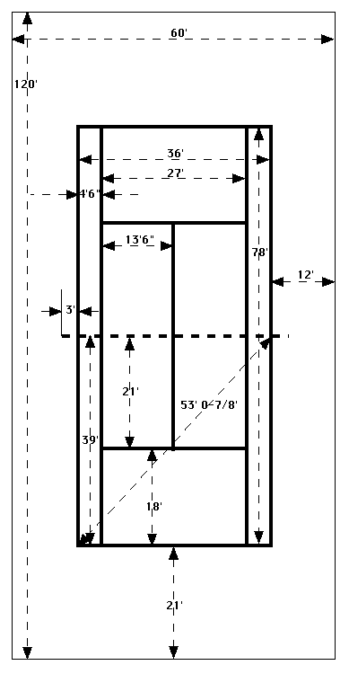

Tennis Court Layout
23 March 1996 edition
Tennis Court Dimensions

Laying Out Lines
- Establish the centerline between the net posts, and then locate two points 18' left and right of center along the net line, the doubles sidelines.
- From the doubles sideline at the netline, swing 39' arcs to the baselines.
Then, swing cross arcs 53' 0-7/8" long to establish the intersections between the doubles sidelines and the baselines -- the four coners of the doubles court.
- From the corners of the doubles court, lay the doubles sidelines and baselines.
- Lay the singles sidelines 4' 6" inside the doubles sidelines.
- Lay the serving lines 18' from the baselines (21' from the net).
- Lay the centerline halfway between the sidelines (18' from the doubles sidelines).
- Lay a 6" long center line inside the center of the baseline.
Laying Tapes on a Clay Court
- To assure straight and tight tapes, start by stretching a mason's line between each of the corner points of the doubles court.
Anchor the mason's line firmly at the corners using 3 or 4 tapeline nails at each corner.
- At approximately 20' centers, drive a nail outside of the mason's line, anchoring it with the nailhead.
- Lay a Tape
- Starting at one corner, lay out tape along the sideline to the other end of the court, running just inside the mason's line.
Anchor the tape at one end with 8 to 10 nails in the holes punched in the tape.
At the other corner, roll the tape 3 to 4 feet beyond the corner.
Pull the tape tight and anchor with 8 to 10 nails in the pre-punched holes.
- At the points where nails are holding the mason's line, nail the tape down.
- Align the remainder of the tape with the mason's line, and nail at about 2' centers.
- Finish nailing the entire tape using the holes punched at 3" centers.
- Repeat the above procedure for all the tapes.
- Don't forget the 6" center line.
Total line-length on one clay tennis court is 481 feet, which requires 1924 nails at 3-inch spacing.
Good Book
Reference: "Clay Tennis Court Maintenance" by Michael R. Humphrey, 1982, 74 pages, softcover by Bacon Street Press, Sherborn, MA.